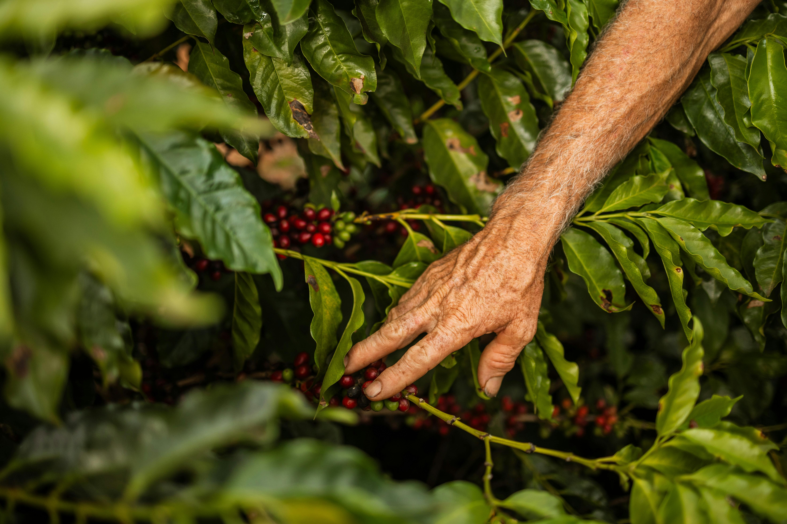
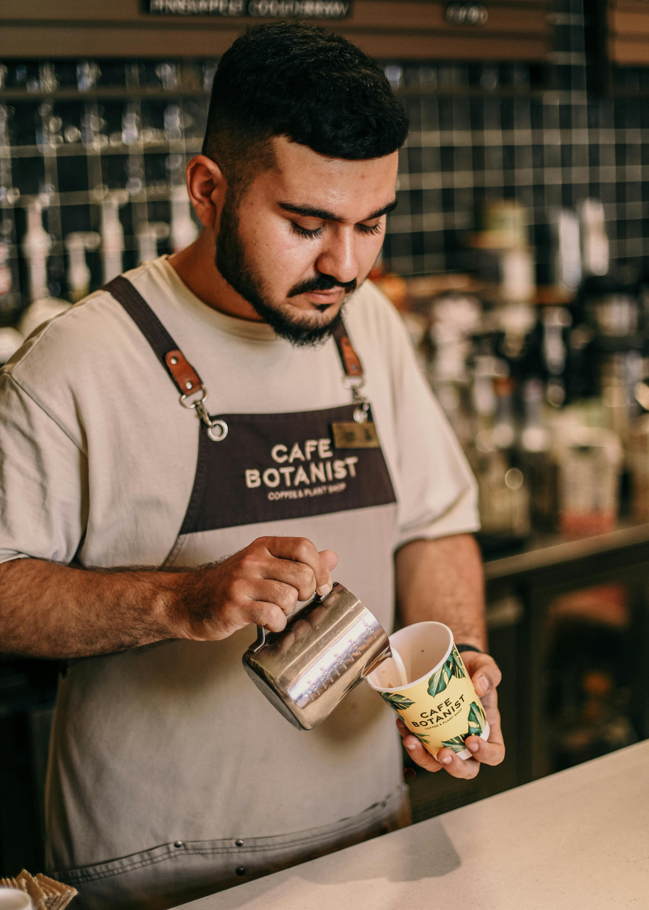
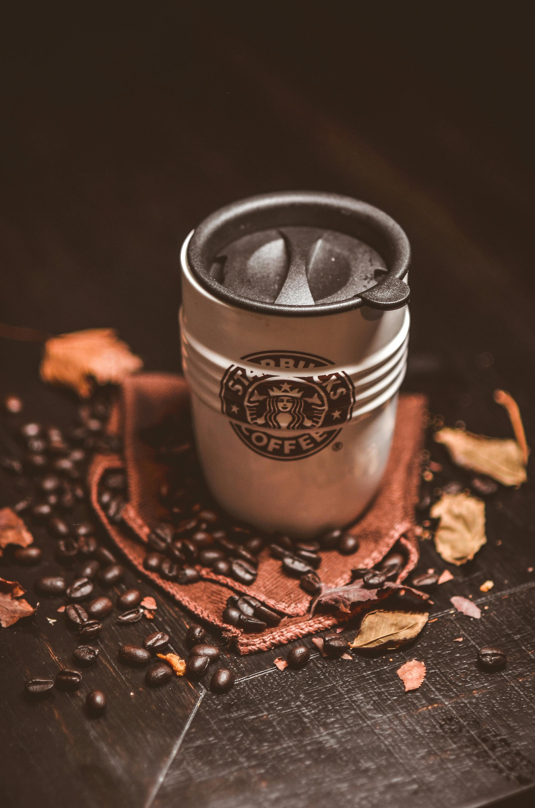

Cafe Peruano
Sobre el origen de nuestro cafe
El café peruano se cultiva en las montañas, donde pequeños agricultores recolectan a mano granos de alta calidad, principalmente de la variedad Arabica. Su cuidadoso proceso de secado y fermentación resalta un sabor suave y frutal, haciendo que sea altamente valorado a nivel mundial.

Nuestra variedad

Estos granos son los mas finos de la cosecha y tienen el precio mas alto y estan listos para complacer los paladares mas finos de los mejores distritos limenos.

Este cafe de gama media esta dirigido a cualquier persona que no sea amante del cafe ya que es de un precio razonable pero no tiene el mejor sabor y color pero se defiende bien.

El cafe mas barato de nuestra seleccion, esta hecho para que lo consuma cualquier persona de escasos recuersos y es distribuido por nuestros amigos venecos en termos a 1 sol.

Disenado para una selecta cantidad de personas que no solo buscan un buen cafe sino una marca la cual presumir, esto es lo que brinda nuestra marca registrada starbucks.
Nuestro cafe es cultivado en los mejores suelos de la selva peruana a 3200mtrsnm, regadas con el agua de manantial directamente desde el nevado pimpollito el cual tiene muchos nutrientes y le da el mejor sabor aparte nuestro cafe es polinizado con las mejores abejtias y abejorros.
-Alfredo perez, agricultor
Toma accion ahora y no pierdas tiempo!!
Deja de huevear y registrate en nuestra pagina para tener todos los beneficios.